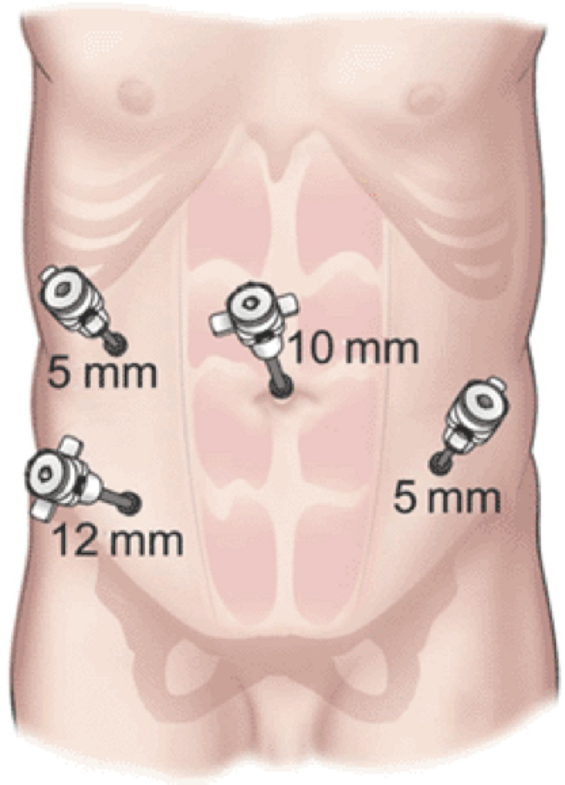

Lap
Anterior Resection
Indications
Sigmoid cancer, high rectal cancer
Special Preparation
n/a
Prep
Bowel prep enables passage of intraluminal stapling devices
Should be done in patients getting an ileostomy; no point having a
colon full of poo if they are getting a stoma to minimize leak.
Procedure
1. Insert ports
- 10 mm umbilical Hassan, 5 mm RUQ, 12 mm RIF, 5 mm LIF.

2.
Alternatives and Controversies